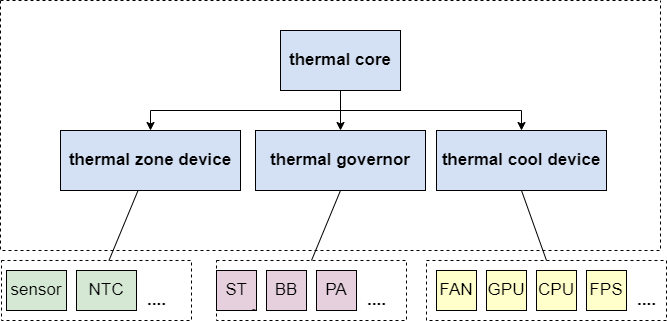
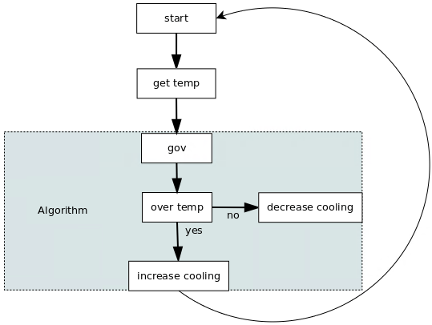

设计说明
26 Nov 2024
源代码位于：drivers/thermal/artinchip_thermal.c
Linux 内核中有一个 Thermal 子系统，代码目录见 drivers/thermal，软件框架如下图：

其中：
-
zone device：获取温度的设备
-
cool device：控制温度的设备，cool 和 zone 可以设置 bind 关系。
-
governor：控温策略
Thermal Core 内部用一个 work 循环执行 thermal_zone_device_update()，其流程如下：
